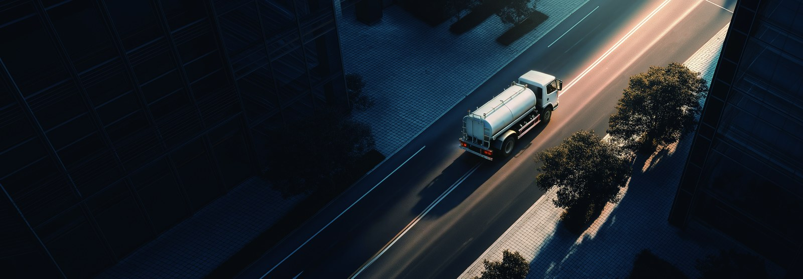

Lagos Island districts pack narrow roads, dense markets and constant foot traffic, and keeping them clean has always meant early diesel sweepers that add noise and fumes to already busy streets. The KT1D electric sweeper truck changes that with a quiet sub-72 dB drive, a 282 kWh CATL LFP pack and an eight-hour shift range on a single charge. Fleet managers watching the Nigeria electric truck market will see the KT1D as the cleanest way to meet Lagos municipal cleaning targets without disturbing residents.
Island avenues run beside homes, offices and roadside traders, so a loud diesel sweeper at 06:00 draws complaints and forces crews to finish before the city wakes. The KT1D runs below 72 dB at the curb, quiet enough to clean through the early morning without noise permits. Zero tailpipe emission matters too, because swept dust already loads the air; adding diesel exhaust makes the job harder on the crew. The electric truck lets Lagos extend cleaning into evening peaks and raise daily coverage per vehicle.
| Parameter | KT1D value |
|---|---|
| Battery chemistry | CATL LFP |
| Pack capacity | 282 kWh |
| Motor | LvKong permanent magnet, 282 kW |
| Noise at curb | below 72 dB |
| Shift range | 8-hour duty |
| Fast charge 20-80 percent | 60-90 minutes |
| Battery warranty | 8 years / 4,500 cycles |
| FOB price band | 55,000-90,000 USD |
A sweeper covers 60-120 km per shift at low average speed with the brushes and vacuum drawing auxiliary load. At 1.2-1.5 kWh per km including sweep load, the 282 kWh pack delivers roughly eight hours of continuous cleaning, enough for a full Lagos Island loop before the depot top-up. The liquid-cooled battery holds the 25-35 C operating window in Nigeria's heat, and the 8-year or 4,500-cycle warranty covers the vehicle through its municipal service life.
| Cost line | Diesel sweeper | KT1D EV truck |
|---|---|---|
| Energy per 100 km | 18-25 L diesel | 120-150 kWh |
| Energy cost per 100 km | 16-30 USD | 10-30 USD |
| Noise at curb | 78-85 dB | below 72 dB |
| Service points | engine, exhaust | motor, brushes |
| Annual saving | base | 5,000-15,000 USD |
Diesel sweepers burn 18-25 litres per 100 km of slow urban work. At 0.90-1.20 USD per litre that is 16-30 USD per 100 km. The KT1D draws 1.2-1.5 kWh per km including sweep load, and at 0.08-0.20 USD per kWh the energy cost is 0.10-0.30 USD per km equivalent. Over a full shift the electric truck saves 15-40 USD per day, and the quieter operation removes the noise-complaint cost that many Lagos councils absorb today.
Lagos heat and coastal humidity are hard on equipment, but the KT1D seals its CATL LFP pack to IP67 and cools it actively to hold the 25-35 C band even in peak dry season. LFP chemistry tolerates deep daily cycling and resists degradation, which supports the 8-year or 4,500-cycle warranty. Crews also benefit from a cooler, fume-free cab during long Island shifts, improving comfort and reducing fatigue on the most congested routes.
Nigeria imports municipal vehicles through the ports of Lagos, and the landed cost depends on the HS code, duty and any current electric mobility incentives. Shaanxi Fenghan Trading supplies FOB documents, marine insurance and a spare-parts kit for the first year. Buyers receive remote diagnostics and on-site commissioning, and the CATL warranty protects against early capacity loss. We help prepare the conformity file for the Standards Organisation of Nigeria clearance before shipment.
Sweeper operators must learn quiet electric torque and the brush and vacuum controls alongside driving. The KT1D training covers smooth low-speed control, regeneration in stop-go cleaning and the high-voltage isolation step after a fault. Because the truck is silent, operators should use the standard warning beep near pedestrians and market stalls. Our package ships with a printed English and Yoruba checklist so every shift starts with a walk-around and a confirmed battery state of charge.
Lagos councils usually award cleaning through a tender, so we package the KT1D with a total-cost bid that shows the 15-40 USD per shift energy saving and the removed noise-complaint cost against a diesel sweeper. Because the 282 kWh pack charges on off-peak tariffs at 0.08-0.12 USD per kWh, the operating budget line is stable and easy to defend. Shaanxi Fenghan Trading issues the conformity documents for the Standards Organisation of Nigeria, a performance guarantee and a staged delivery so the contractor proves quiet cleaning on a pilot ward before the full fleet is funded.
A sweeper's hidden cost is water, brush wear and the diesel burned by a companion water truck. The KT1D runs its vacuum and brushes from the same LFP pack, and its low noise lets crews work earlier, so the road stays wet longer and less water is used per kilometre. Brush life is unchanged, but the removed diesel engine cuts oil, filter and coolant spending entirely. Over a year a single Lagos Island sweeper typically saves 5,000-15,000 USD once these consumables are counted, which strengthens the tender math and frees budget for more routes.
The KT1D shares the LvKong motor platform with the wider Dongfeng EV range, so common parts such as the contactor, the cooling pump and the regen module are already stocked in Nigeria. We pre-position a 12-month kit in Lagos and train a local workshop on the battery management system read-out, so most faults are solved by video call within a day. The 8-year or 4,500-cycle battery warranty protects against early capacity loss, and a weak module is swapped in hours rather than returning the truck, keeping the cleaning contract on schedule through peak season.
Because the KT1D runs below 72 dB, Lagos can shift part of the cleaning window into the evening when markets close, improving daytime road space and supporting the city tourism and business image. Clean, quiet avenues after dark are a visible signal of a well-run council, and the zero tailpipe emission protects evening pedestrians. Operators report that residents warm to the programme once they see a sweeper working without the usual diesel roar, which eases the politics of expanding the electric fleet across more Island districts.
Every KT1D streams energy per km, state of charge and fault codes to a single council portal, so a Lagos supervisor sees the whole cleaning fleet at a glance. The data exposes inefficient loops and brushes left running while parked, and it confirms the 1.2-1.5 kWh per km sweep figure on each shift. Over a month this visibility typically trims 5-10 percent off energy use, and the same log supports the battery warranty by proving the pack was charged within the 25-35 C window and the 4,500-cycle limit through the year.
Send your daily route length, sweep hours and depot power to our sales team, and we will size the battery, propose a charger layout and quote FOB Lagos. Volume buyers get staged delivery, fixed parts pricing and local commissioning. The KT1D electric sweeper truck is available for pilot and full fleet orders, and the Nigeria electric truck market is ready for quiet municipal cleaning. Contact Shaanxi Fenghan Trading Co., Ltd by WhatsApp at +86 153 1943 1311 or by email at sales@fenghan-trade.com to start your EV truck programme today.
Ready to electrify your fleet? Contact Shaanxi Fenghan Trading — authorized Dongfeng EV truck exporter. WhatsApp: +86 153 1943 1311 | Email: sales@fenghan-trade.com | dongfengevtrucks.com
🌐 Our Network: Fenghan Trade (SAGMOTO/SHACMAN Truck Export) · SAGMOTO heavy duty diesel trucks